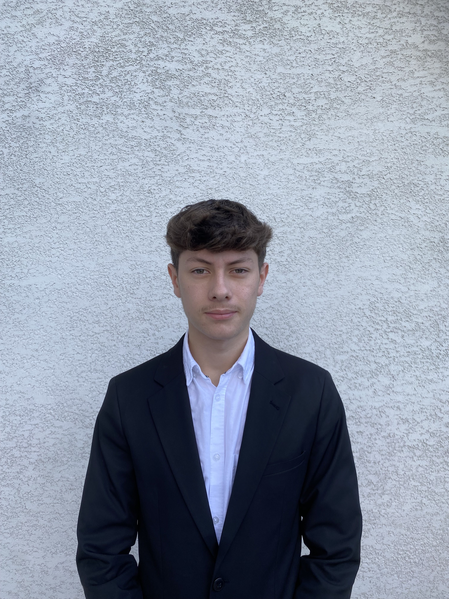

Je m'appelle Bastien Lorenzi, je suis né le 12 juillet 2006 à Vesoul, et j'ai 18 ans. J'ai effectué toute ma scolarité à Lure, au collège Albert Jacquard et au lycée Georges Colomb, où j'ai suivi les spécialités SVT, SES et Physique-Chimie en première, puis SVT et SES en terminale. Actuellement, je poursuis un BUT en Réseaux et Télécommunications à Montbéliard.
J'ai choisi le BUT Réseaux et Télécommunications pour approfondir mes compétences dans le domaine des technologies de l'information et de la communication. Mon objectif est de me spécialiser dans la cybersécurité et de contribuer à l'innovation dans ce secteur en constante évolution.
En ce qui concerne mes projets à court et long terme, mon objectif immédiat est de réussir ma première année de BUT, puis de poursuivre avec la deuxième et la troisième année. J'envisage d'effectuer mes deux dernières années en alternance, avec un accent sur la cybersécurité. À plus long terme, mon ambition est de créer ma propre entreprise spécialisée dans la cybersécurité à coût réduit, afin de proposer des services efficaces et accessibles à tous.